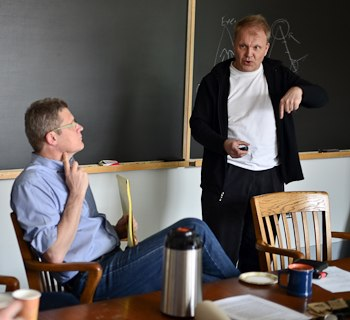

-
•Bo E. Honoré, Professor, Princeton University.

Danish Academic Economists in North America
Members
Chairman:
-
•Nikolaj A. Harmon, Assistant Professor, University of Copenhagen.
-
•Adam Jørring, PhD Student, University of Chicago.
Board Members:
-
•Mathilde Almlund, Postdoc, University of Oxford.
-
•Mikael B. Andersen, PhD Student, University of Wisconsin-Madison.
-
•Torben G. Andersen, Professor, Kellogg School of Management, Northwestern University.
-
•Tim Bollerslev, Professor, Duke University.
-
•Niels-Hugo Blunch, Associate Professor, Washington and Lee University.
-
•Peter Christoffersen, Professor, Rotman School of Management, University of Toronto.
-
•Farhang Farazmand, Economics Consultant, Cornerstone Research.
-
•Karsten T. Hansen, Associate Professor, Rady School of Management, University of California, San Diego.
-
•Niels Haldrup, Professor, University of Aarhus.
-
•Jonas Hjort, Assistant Professor, Columbia Business School.
-
•Esben Hedegaard, Visiting Assistant Professor, W. P. Carey School of Business, Arizona State University.
-
•Michael Jansson, Associate Professor, University of California, Berkeley.
-
•Rasmus Jørgensen, Assistant Professor, University of Copenhagen.
-
•Dennis Kristensen, Reader, University College London.
-
•Rasmus Lentz, Associate Professor, University of Wisconsin, Madison.
-
•Christian Lund, PhD Student, Northwestern University.
-
•Morten Nielsen, Queens University
-
•Mikkel Plagborg-Møller, PhD Student, Harvard University.
-
•Claus Pörtner, Assistant Professor, Albers School of Business and Economics, Seattle University.
-
•Ernst Schaumburg, Research Officer, Federal Reserve Bank of New York.
-
•Lars Stentoft, Associate Professor, University of Western Ontario.
-
•Mikkel Sølvsten, PhD Student, University of California, Berkeley.
-
•Bent Sørensen, Professor, University of Houston.
-
•Jesper Riis-Vestergaard Sørensen, PhD Student, University of California, Los Angeles.
-
•Morten Sørensen, Associate Professor, Columbia Business School.
-
•Allan Timmermann, Professor, Rady School of Management, University of California, San Diego.
-
•Dorthe Verner, Principal Economist, Inter-American Development Bank.
-
•Emil Verner, PhD Student, Princeton University.
-
•Marie-Louise Vierø, Assistant Professor,
Queens University. -
•Lise Vesterlund, Professor, University of Pittsburgh.
-
•Birger Wernerfelt, Professor, Sloan School of Management, Massachusetts Institute of Technology.
-
•Nils Wernerfelt, PhD Student, Massachusetts Institute of Technology.
Regular Members:



Prof. Torben G. Andersen, and Prof. Bo Honoré discuss asset pricing using option panels at the 2012 DAEiNA meeting. © 2012 Nikolaj A. Harmon
-
•Dale T. Mortensen, (1939-2014).
Honorary Members: